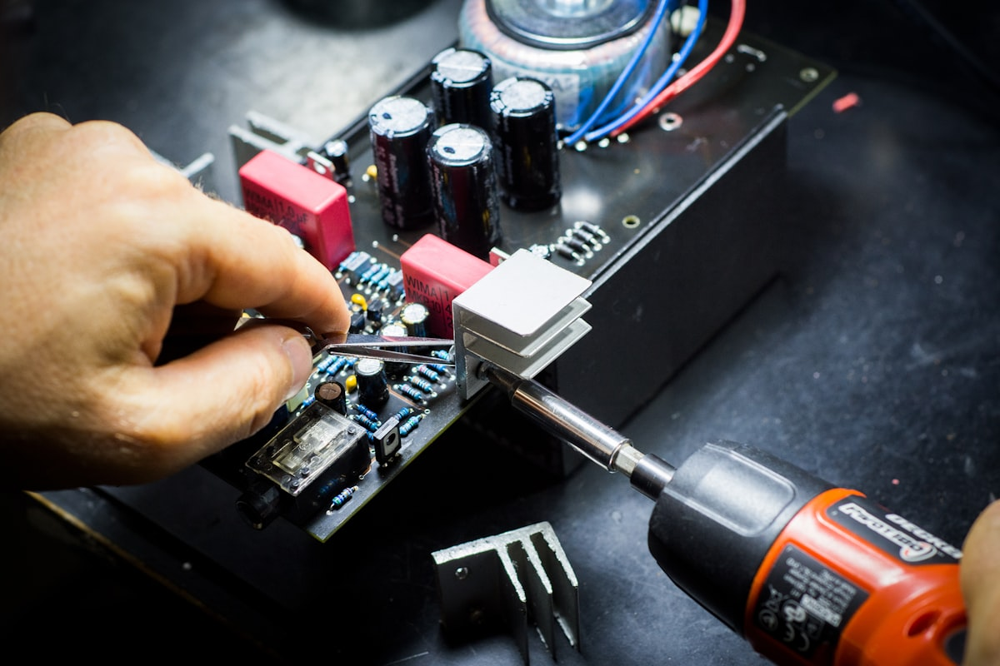
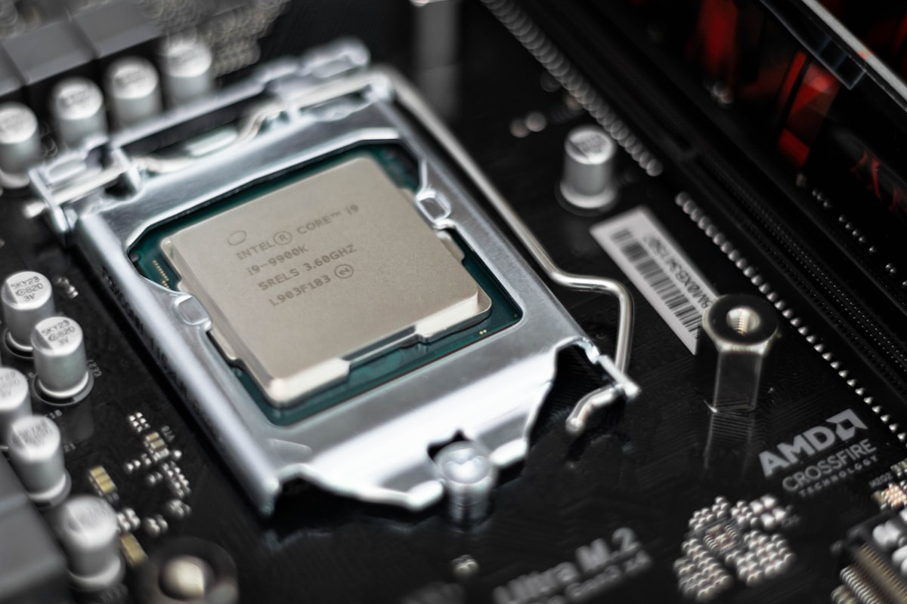

Wireless display technology has evolved rapidly over the past decade. Consumer solutions such as Miracast, Chromecast, and AirPlay made screen sharing convenient, but professional environments often require something different: instant, low-latency wireless HDMI transmission.
Conference rooms, classrooms, and presentation environments prioritize reliability and simplicity. Users expect to plug a device into their laptop and immediately mirror their screen to a display without installing apps, joining networks, or dealing with compatibility issues.
This article explores the technical architecture of a professional wireless HDMI dongle system, breaking down the system at the component and chipset level. We will examine the signal pipeline, core hardware components, chipset options, and the engineering considerations required to build such a device today.
The Concept: True Wireless HDMI

A professional wireless HDMI system typically consists of two physical devices:
Transmitter (TX) — connected to a laptop
Receiver (RX) — connected to a TV, monitor, or projector
The transmitter captures the HDMI output from the laptop and sends it wirelessly to the receiver, which then outputs the video to the display.
Signal Flow
Laptop → TX Dongle → Wireless Transmission → RX Dongle → HDMI → Display
Unlike casting technologies, this approach:
- Does not rely on the building's Wi-Fi network
- Works instantly with plug-and-play simplicity
- Offers predictable and lower latency
- Supports full screen mirroring without software dependencies
For presentation environments, this simplicity is essential.
High-Level System Architecture

The transmitter captures the HDMI signal, compresses the video, and transmits it wirelessly. The receiver decodes the stream and reconstructs the HDMI output.
Transmitter Architecture
HDMI Input → HDMI Capture IC → Video Processing SoC (Encoder) → Wireless Module (5 GHz Wi-Fi) → RF Transmission
Receiver Architecture
Wireless Receiver → Video Processing SoC (Decoder) → Frame Buffer → HDMI Transmitter → Display Output
This architecture allows the system to send video across a wireless link while maintaining acceptable latency.
The Video Pipeline
The end-to-end signal path in a wireless HDMI system follows a structured flow:
In essence, the device behaves like a dedicated wireless video streaming link optimized for real-time display mirroring.
Core Hardware Components

Although the system performs complex tasks, the hardware architecture is surprisingly compact.
1. HDMI Receiver (Transmitter Side)
The transmitter must first capture the HDMI signal from the laptop. Typical HDMI receiver chips include ADV7611 and MS2130.
Responsibilities include:
- HDMI signal decoding
- EDID negotiation with the laptop
- HDCP handling
- Frame extraction from HDMI stream
Once captured, raw video frames are passed to the video processor.
2. Video Processing SoC
The video processor is the heart of the system. This chip handles:
- Real-time video encoding (transmitter)
- Real-time video decoding (receiver)
- Frame buffering
- Packetization of video frames
- System control and networking
Many wireless HDMI systems use processors originally developed for IP camera platforms, because those chips are optimized for low-latency video encoding and network streaming.
3. Wireless Connectivity Module
Most wireless HDMI systems use 5 GHz Wi-Fi with Wi-Fi Direct. Key characteristics:
- High bandwidth transmission
- Reduced interference compared to 2.4 GHz
- Point-to-point wireless communication
Professional systems often create their own private wireless link, avoiding reliance on building infrastructure.
4. Memory Subsystem
DDR RAM (512 MB – 1 GB) — Frame buffering, encoder pipelines, and network buffers.
Flash Storage (4 GB – 8 GB) — Firmware, bootloader, and system configuration.
5. HDMI Transmitter (Receiver Side)
After decoding the video stream, the receiver must output HDMI to the display. Typical HDMI transmitter chips convert digital video frames into HDMI-compliant signals that the display can interpret.
Latency Benchmarking of Wireless Display Technologies
Latency determines how quickly the content displayed on a laptop appears on the external display. Wireless display systems introduce latency at several stages:

The size of each stage's processing buffer has a direct impact on the final latency experienced by the user.
| Technology | Typical Latency | Network Dependency | Primary Use Case |
|---|---|---|---|
| Miracast | 150–250 ms | Wi-Fi Direct | Screen mirroring |
| Chromecast / Casting | 180–300 ms | Internet streaming | Media playback |
| Wireless HDMI | 40–80 ms | Dedicated wireless link | Presentations |
Why Wireless HDMI Achieves Lower Latency
Dedicated Wireless Link — Unlike Miracast or Chromecast, wireless HDMI systems often operate on a private wireless channel, eliminating interference from other network traffic.
Encoder Optimization — Video compression parameters are tuned specifically for low-latency streaming, minimizing frame buffering.
Simplified Software Stack — Because the system performs only mirroring rather than full media playback, the firmware pipeline is simpler and more deterministic.
PCB Design and Layout
Wireless HDMI devices use compact multi-layer PCBs to accommodate high-speed signals and RF components.
Top Side: Video processing SoC, DDR memory, Wi-Fi module, RF shielding
Bottom Side: Flash storage, power management IC, voltage regulators
Because HDMI uses high-speed differential signaling, careful PCB routing is required to maintain signal integrity and reduce electromagnetic interference.
Common Chipsets Used in Wireless HDMI Systems

Novatek NT9666x Series
Widely used in video streaming and camera systems.
Strengths
- Excellent real-time H.264 encoding
- Optimized for low-latency streaming
- Mature firmware ecosystem
- Widely used in ODM platforms
Limitations
- Limited graphics capability
- Typically limited to 1080p
- Not designed for full OS
HiSilicon Hi3516 Series
Originally developed for security cameras and embedded video systems.
Strengths
- Efficient hardware encoder
- Low power consumption
- Strong Linux support
- Reliable network streaming
Limitations
- Limited global developer ecosystem
- Restricted documentation
- Moderate CPU performance
Ambarella Video Processors
Widely used in professional video equipment.
Strengths
- Excellent video compression quality
- Robust multimedia pipelines
- Reliable professional performance
Limitations
- Significantly higher cost
- Overkill for simple mirroring
- Longer development cycles
Rockchip RK3566
A modern ARM processor widely used in embedded multimedia systems.
Strengths
- Powerful CPU and GPU
- Strong Linux and Android ecosystem
- Flexible for custom applications
Limitations
- Higher power consumption
- Complex software integration
- Larger firmware stack
Amlogic S905 Series
Widely used in streaming sticks and media devices.
Strengths
- Strong video decoding capability
- Large development ecosystem
- Strong multimedia performance
Limitations
- Optimized for playback, not capture
- Requires additional capture ICs
- More complex hardware design
Allwinner SoCs
Widely used in low-cost embedded multimedia systems. Common models include H3, H6, V3s, and H616.
Strengths
- Very cost efficient
- Integrated video encode/decode
- Widely used in ODM products
- Embedded Linux compatible
Limitations
- Fragmented dev ecosystem
- Variable documentation quality
- Moderate advanced performance
Performance Benchmarks of Common Wireless HDMI SoCs
Wireless HDMI systems rely on hardware video encoding pipelines, but CPU performance still influences system responsiveness, firmware complexity, and networking capabilities.
The following table provides representative benchmark ranges for several commonly used embedded multimedia processors.

| SoC | CPU Architecture | Geekbench Single | Geekbench Multi | Antutu Score | GPU |
|---|---|---|---|---|---|
| Allwinner H3 | Cortex-A7 (4 cores) | ~90 | ~260 | ~22,000 | Mali-400 |
| Allwinner H6 | Cortex-A53 (4 cores) | ~140 | ~420 | ~40,000 | Mali-T720 |
| HiSilicon Hi3516 | Cortex-A7/A53 variants | ~120 | ~350 | ~30,000–40,000 | Mali-400 |
| Novatek NT96663 | Cortex-A7 class | ~100 | ~300 | ~30,000 | Integrated ISP |
| Rockchip RK3566 | Cortex-A55 (4 cores) | ~155–165 | ~450–460 | ~90,000 | Mali-G52 |
| Amlogic S905X4 | Cortex-A55 (4 cores) | ~170 | ~520 | ~100,000+ | Mali-G31 |
However, higher CPU performance does not automatically translate to lower latency in wireless HDMI systems.
Performance Tier Classification
The processors above generally fall into three performance categories.
Entry-Level Embedded Video Platforms
Examples: Allwinner H3, HiSilicon Hi3516, Novatek NT96663
CPU Class: Cortex-A7 | GPU: Limited | Focus: Efficient hardware encoding
Typical usage: wireless HDMI dongles, Miracast adapters, IP camera streaming hardware. These processors prioritize video encoding efficiency over raw computing power.
Mid-Range Multimedia Platforms
Examples: Allwinner H6, Amlogic S905X2 / S905X3
CPU Class: Cortex-A53 | Multimedia: Improved engines | Focus: Balanced performance
Typical usage: Android TV boxes, casting devices, multimedia adapters. These processors provide a balance between compute performance and multimedia capabilities.
Modern Embedded Platforms
Examples: Rockchip RK3566, Amlogic S905X4
CPU Class: Cortex-A55 | GPU: Stronger | Focus: Advanced codec pipelines + improved memory bandwidth
These chips are capable of powering more advanced embedded devices such as smart displays, media hubs, and multimedia appliances.
Engineering Challenges

HDMI Compatibility
Different laptops output different combinations of resolutions, refresh rates, and HDCP configurations. The transmitter must negotiate these parameters correctly using EDID.
Wireless Stability
Presentation environments often contain many RF sources — multiple Wi-Fi networks, Bluetooth devices, and wireless microphones. Maintaining a stable high-bandwidth wireless link requires careful RF design and antenna placement.
Latency Optimization
Video encoder configuration has a major impact on latency. Factors include encoder buffer size, compression settings, and packet transmission strategy.
Thermal Design
Real-time video encoding generates heat. Without proper thermal management, the processor may throttle or degrade performance during extended use.
Reference Architecture
A modern wireless HDMI system can be built using a relatively simple hardware architecture.
Transmitter
HDMI Receiver IC → Video Processing SoC (Encoder) → DDR Memory → Wi-Fi Module (5 GHz / Wi-Fi Direct)
Receiver
Wi-Fi Module → Video Processing SoC (Decoder) → DDR Memory → HDMI Transmitter
This architecture allows the system to operate as a dedicated real-time wireless video link.
The Relationship Between Processing Power and Latency

Although faster processors provide more headroom for system tasks, the most important factors influencing latency are:
- Hardware video encoder efficiency
- Memory bandwidth
- Wireless transmission stability
- Buffering strategy
A lower-power processor with an optimized hardware encoder can often outperform a more powerful processor relying on inefficient pipelines.
Performance vs Latency Tradeoffs
Wireless HDMI system design is largely a balance between compute capability and video pipeline efficiency.
| Design Priority | Hardware Choice |
|---|---|
| Lowest cost | Camera-oriented processors |
| Balanced performance | Cortex-A53 multimedia SoCs |
| Future-ready platforms | Cortex-A55 multimedia SoCs |
Selecting the right platform depends on system goals: power consumption, firmware complexity, video resolution targets, and wireless throughput.
Final Thoughts
Wireless HDMI devices may appear simple from the outside, but internally they combine several complex technologies:
- HDMI signal processing
- Real-time video compression
- Embedded networking
- RF transmission
At their core, these devices are compact embedded video streaming systems optimized for reliability and instant usability.
While casting technologies dominate consumer media streaming, wireless HDMI continues to play an important role in environments where simplicity, predictability, and low latency matter most.
As wireless chipsets and video processors continue to evolve, the next generation of wireless HDMI systems will likely push toward lower latency, higher resolution support, improved RF reliability, and more efficient embedded architectures.
For engineers and product designers working in the display ecosystem, understanding this architecture offers valuable insight into how modern wireless presentation systems are built.
Have questions about wireless display technology? Reach out on LinkedIn or X/Twitter.
Image Credits
All images used in this article are sourced from Unsplash under the Unsplash License.
- Hero & thumbnail — Photo by Umberto on Unsplash
- HDMI connectors — Photo via Unsplash
- Network infrastructure — Photo by Jordan Harrison on Unsplash
- Circuit board close-up — Photo by Alexandre Debiève on Unsplash
- Microchip — Photo by Brian Kostiuk on Unsplash
- Conference room — Photo by Nastuh Abootalebi on Unsplash
- Processor close-up — Photo via Unsplash
- Network infrastructure (latency) — Photo via Unsplash
- Performance analytics dashboard — Photo by Luke Chesser on Unsplash